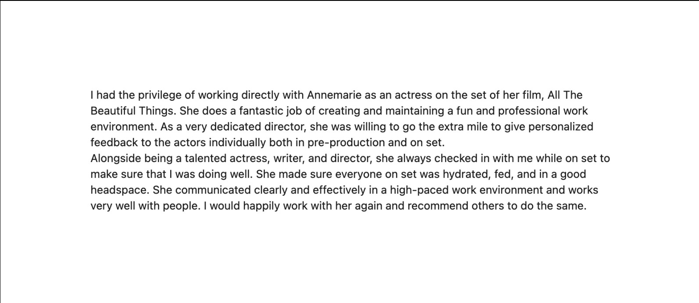

I had the privilege of working directly with Annemarie as an actress on the set of her film, All The Beautiful Things. She does a fantastic job of creating and maintaining a fun and professional work environment. As a very dedicated director, she was willing to go the extra mile to give personalized feedback to the actors individually both in pre-production and on set.
Alongside being a talented actress, writer, and director, she always checked in with me while on set to make sure that I was doing well. She made sure everyone on set was hydrated, fed, and in a good headspace. She communicated clearly and effectively in a high-paced work environment and works very well with people. I would happily work with her again and recommend others to do the same.
— Cast, All the Beautiful Things

As submitted